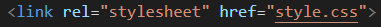
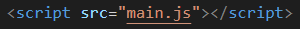
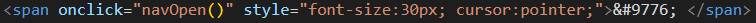
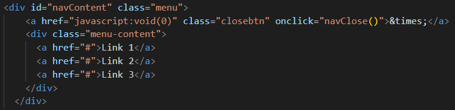
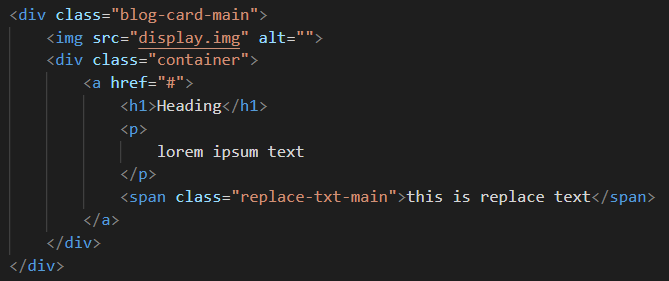
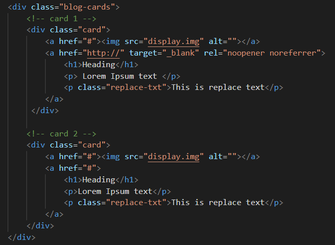
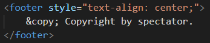

It took me about three to four days to code my blogging site. I gave it about five hours everyday. I also wrote this blog side by side showing you how I built it.
I have used three files in making this project named: index.html for html. style.css for css, and main.js for all the JavaScript code. I recommend you do the same and don't forget to link all the files together.
To show you how that's done put this link in the head of your html:

Next, put this link in your body tag:

PS: This blog is not for teaching or tutorial purpose but solely to share code so it can be manipulated to create something beautiful.
head tag: https://fonts.googleapis.com/icon?family=Material+Icons
This is a link to Google's Icon & Materials Gallery from where you can get
the dark mode (and other) symbol(s).
< a class="moon-dark" >
< span class="material-icons black-color" style="float: right; font-size: 30px;" onclick="DarkMode()"> dark_mode
< p class="hover-message"> Do not click while driving!< /p>
< /a>
.hover-message{
background-color: rgb(252, 250, 250);
font-family: poppins;
font-weight: 550;
display: none;
border-radius: 15px;
padding: 10px;
font-size: 15px;
width: fit-content;
}
.moon-dark{
text-decoration: none;
color: black;
}
.moon-dark:hover .hover-message{
display: block;
position: absolute;
right: 20%;
}
.darkMode{
background-color: rgb(0, 0, 0);
color: white;
transition: 1s;
}
.darkMode p{
color: white;
}
.darkMode .moon-dark{
text-decoration: none;
color: white;
}
.darkMode .hover-message{
background-color: rgb(51, 51, 51);
font-weight: 500;
}
function DarkMode() {
var element = document.body;
element.classList.toggle("darkMode");
}

And then separately in another div:

.menu {
height: 100%;
font-family: poppins;
width: 0;
position: fixed;
z-index: 1;
top: 0;
left: 0;
background-color: rgba(255, 255, 255, 0.93);
overflow-x: hidden;
transition: 0.5s;
}
.menu-content {
position: relative;
top: 10%;
width: 100%;
margin-top: 30px;
text-align: left;
margin-left: 20px;
}
.menu a {
padding: 8px;
width: fit-content;
text-decoration: none;
font-size: 28px;
color: #747474;
display: block;
transition: 0.4s;
}
.menu a:hover {
color: black;
opacity: 1;
}
.menu .closebtn {
position: absolute;
top: 20px;
right: 45px;
font-size: 50px;
}
@media screen and (max-width: 600px) {
.menu a {
font-size: 23px;
}
.menu .closebtn {
font-size: 35px;
top: 15px;
right: 35px;
}
}
If you've used the above code for dark mode light mode, than it is only natural to style the menu for dark mode too. If you've not enabled dark mode light mode or you want your menu to stay the same even in dark mode, than you should skip this step.
.darkMode .menu {
background-color: rgba(17, 17, 17, 0.93);
}
.darkMode .menu a {
color: #b4b4b4;
}
.darkMode .menu a:hover {
color: white;
opacity: 1;
}
.darkMode .menu .closebtn {
color: #b4b4b4;
}
function navOpen() {
document.getElementById("navContent").style.width = "100%";
}
function navClose() {
document.getElementById("navContent").style.width = "0%";
}

So what's happening above is that we create a div
for our main blog-card, add an img tag to it and a container divvy that's gonna hold
whatever text we want to display. You can also see a span element with class
replace-txt-main and some text in it. It basically exists so when the page is loaded on a smaller screen you can replace the long text
reserved for bigger screens with a smaller, more concise text. Ofcourse, it's completely optional.
Here's the part you can get crazy with. Below is css for the basic structure of the card and responsiveness but you can design it however you like. The sky is not the limit!
.blog-card-main{
max-height: 300px;
max-width: 800px;
display: flex;
margin-bottom: 90px;
padding: 10px;
}
.blog-card-main img{
max-height: 100%;
width: 50%;
border-radius: 15px;
}
.container{
padding: 10px;
}
.container a{
text-decoration: none;
color: black;
}
.replace-txt-main {display: none;}
@media screen and (max-width: 550px){
.container p{display: none;}
.replace-txt-main{display: block; font-size: 15px; font-family: poppins; height: auto;}
.blog-card-main{
display: block;
position:relative;
}
.blog-card-main img{
width: 100%;
height: auto;
}
.container{padding: 0;}
}
@media screen and (max-width:300px){
.container p{
font-size: 13px;
}
}
As I work with my site more and more, code and publish more articles, I intend to unleash my creativity and not stop the designing process of this site. It is my expectation that I will change it very much but everytime I do I'll look forward to comming back to this blog over and over again.
Because I only have very few articles, I chose this minimalistic flex design to display all my blogs, but ofcourse that is not gonna be the case always.

So what's happening above is that I created a main div and in it
a seperate div for the individual cards. I added an image and some link texts as well
as a p tag with class="replace-txt" for the
same replace text effect for responsive design as I did in building thr main card.
.blog-cards{
display: flex;
}
.card{margin: 10px;}
.card img{
width: 100%;
border-radius: 15px;
}
.card h1{font-family: Inconsolata; margin-top: 0; padding-top: 0; padding-bottom: 0; margin-bottom: 0;}
.card p{font-family: poppins; }
.card .replace-txt {display: none;}
.card a{text-decoration: none; color: black;}
@media screen and (max-width:550px){
.card p{display: none;}
.card .replace-txt{display: block; font-size: 15px;}
.card {height:300px;}
}
@media screen and (max-width: 350px){
.blog-cards{display: block; margin: 0; padding: 0;}
.blog-cards {padding: 0; margin: 0;}
}
Basically I've only added two cards to my card-grid but if you want you can add more. Just make sure they fit in together, look good, are responsive on shorter and larger screens, and you're done!
So my footer is pretty basic with a copyright infrigement and the site name. If you want you can add lists, links and any contact information if you want.

footer {
background-color: rgb(242, 242, 242);
font-family: poppins;
width: 100%;
padding: 5px;
position: static;
bottom: 0;
right: 0;
left: 0;
}
@media screen and (max-width: 350px){
footer {font-size: 13px; padding: 1px;}
}
.darkMode footer{background-color: rgb(34, 34, 34);}
Although you can use these code snippets separately but you've got to be vigilant as some of them are intertwined.